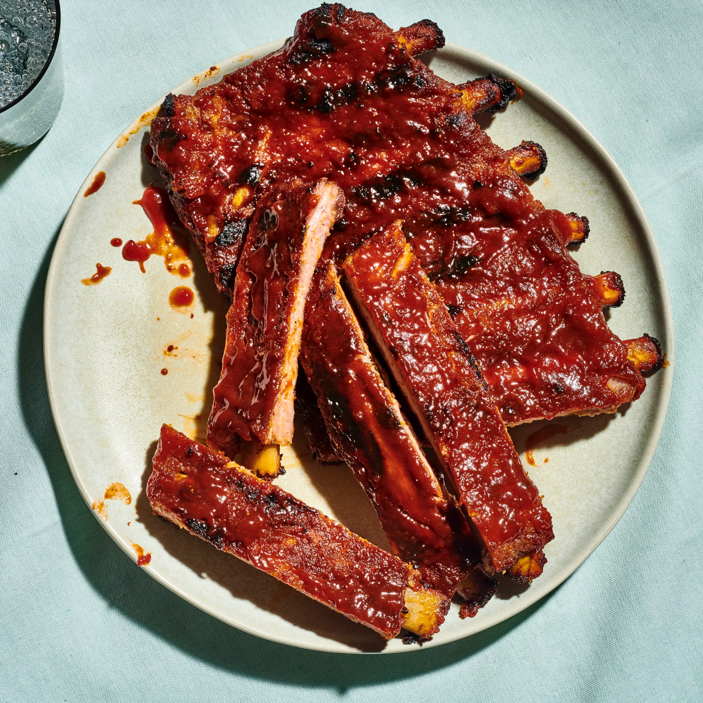

Spare ribs barbecue sauce

How to prepare spare ribs with barbecue sauce for 4 people!
With some spare ribs and some saucy barbecue sauce, this is the best meal to prepare
Ingredients
- Onion, finely chopped-100g
- Clove of garlic,chopped-1
- Oil-60ml
- Vinegar-60ml
- Tomato puree-150g
- Honey-60ml
- Brown stock-250ml
- Worcester sauce-4tbsp
- Dry mustard-1tsp
- Thyme
- Salt
- Spare ribs-2kg
Steps
- Sweat the onion and garlic in the oil without color.
- Mix in the vinegar, tomato puree,honey,stock,worcester sauce,mustard and thyme and season with salt.
- Allow the barbecue sauce to simmer for 10-15 minutes.
- Place the prepared spare ribs fat side up on a trivet in a roasting tin.
- Brush the spare ribs liberally with the barbecue sauce.
- Place in a moderately hot oven 180-200 degrees celcius.
- Cook for 3/4 - 1 hour
- Baste generously with the barbecue sauce every 10-15 minutes.
- The cooked spare ribs should be brown and crisp.
- Cut the spare ribs into individual portions and serve.
Apply plenty of barbecue sauce before and during cooking, to give the ribs a good flavour.
Home